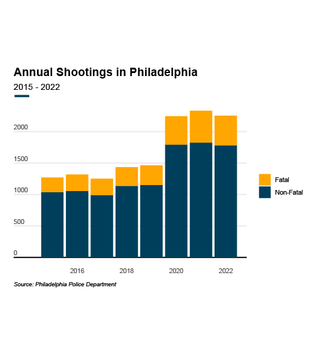
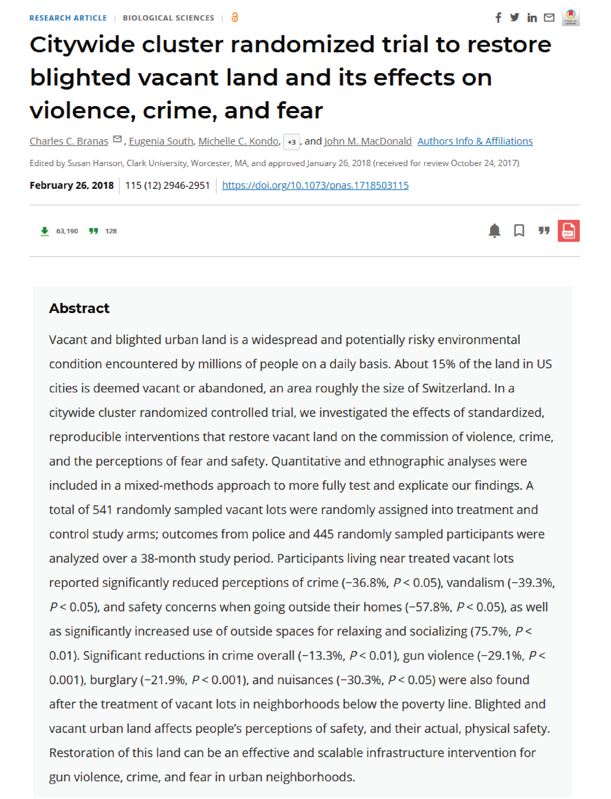
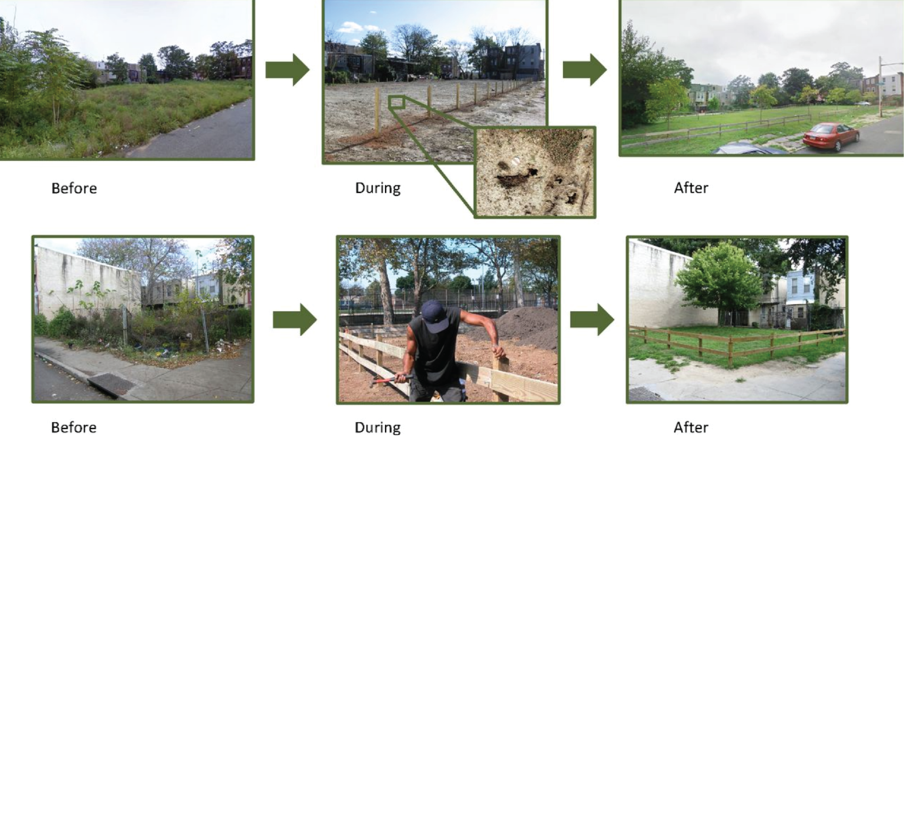
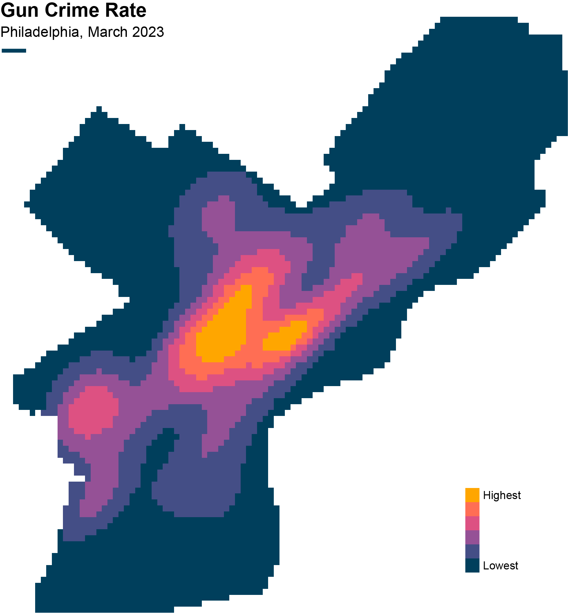

About
Motivation
Philadelphia has a gun violence problem. Homicides have been on the rise since 2013. The past three years—2020, 2021, and 2022—have been the deadliest on record, with a high of 562 homicides in 2021. Community members need solutions, but many city-run initiatives are frustratingly slow or inadequate. Nearly 80% of the city’s anti-violence spending focuses on long-term violence reduction without any clear, immediate impact.

Research
Research shows that greening and cleaning vacant and abandoned parcels is one of the most impactful, cost-effective interventions available to reduce gun violence in a neighborhood.
Drs. Eugenia South and Charles Branas have led several studies that demonstrate that greening vacant lots in Philadelphia reduced gun violence by as much as 29% in the surrounding area. Similarly, cleaning and lightly repairing vacant houses led a 13% drop in gun assaults compared to nearby blocks. These “greening and cleaning” interventions not only reduce gun violence but also provide other benefits, such as reducing the urban heat island effect, lowering residents’ stress levels, and contributing to lower levels of depression among residents.


Importantly, community residents are already following the data and taking matters into their own hands. This map aims to turn this research into an actionable tool to empower community members to continue making a positive difference in their neighborhoods.
Methodology
This map combines data on vacant and abandoned properties from the Department of Licenses and Inspections with Philadelphia Police Department data on gun violence. Additional datasets from a variety of other sources provide more information about each parcel, such as what neighborhood it falls in and whether it’s in the PHS Community LandCare or Philadelphia LandCare programs.
The basic methodology is as follows. First, crime data were filtered to include only gun crimes (reported as “aggravated assault firearm” and “robbery firearm” by PPD) in the past year. This follows the research upon which the dashboard is based. These points were then used to calculate a [kernel density estimate] (https://pro.arcgis.com/en/pro-app/latest/tool-reference/spatial-analyst/how-kernel-density-works.htm) (KDE), which indicates the intensity of gun crime at any point in space. The KDE was then extracted to each vacant parcel to indicate the local level of gun violence. Finally, to make the gun crime rates easier to understand, each parcel was classified by the percentile into which its gun crime score falls. Those interested in a more in-depth understanding of how this map was produced can view the Python code behind the dataset in this GitHub repository.

Attribution
This dashboard was built by Nissim Lebovits. He is a master's student in city planning at the University of Pennsylvania's Weitzman School of Design, where he focuses on environmental planning and spatial analysis. He's interested in using data to foster civic engagement and build more sustainable, inclusive cities. Previously he was an AmeriCorps VISTA with the City of Philadelphia, where he worked to support residents of the West Philadelphia Promise Zone. For questions about this dashboard, to see more of his work, or to hire him to support your community organization's data work, please see his website.
Acknowledgements
Many people helped inform this tool, including residents, CDC leaders, City staff, Penn faculty, and more. Special thanks, however, are due to Dante Leonard for facilitating countless valuable conversations with people throughout Philadelphia, to Mjumbe Poe for serving as my independent study instructor while I built the JavaScript dashboard and website, to Vicky Tam for teaching the GIS class in which I built the first functional version of this tool, and to Dr. Eugenia South for spearheading the original research upon which this tool is based.